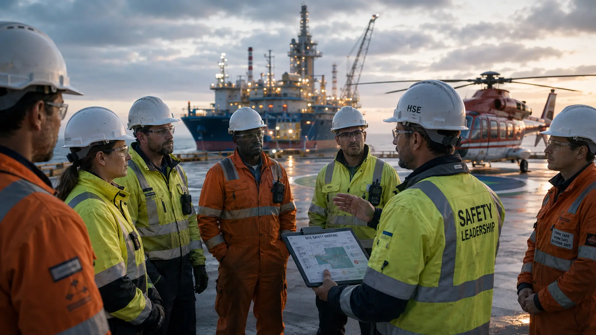

Als je de afgelopen maanden ook maar één keer per week het nieuws hebt gevolgd, dan weet je het: het is onrustig in het Midden-Oosten. De Strait of Hormuz — dat smalle stukje water waar normaal een vijfde van de wereldwijde olie doorheen vaart — is al maanden niet meer wat het was. Schepen kiezen voor omwegen, verzekeraars rekenen premies die niemand een jaar geleden voor mogelijk had gehouden, en de olieprijs zit al een tijd boven de honderd dollar per vat.
Voor de meeste mensen klinkt dit als nieuws dat ver weg gebeurt. Iets voor analisten en oliehandelaren, niet voor jou en mij. Maar als je werkt in de Rotterdamse haven, op een offshore-project, in een chemische installatie of bij een terminal, dan voel je het wél. Misschien niet meteen in je weekoverzicht, maar wel in de strengere audits, de plotselinge interesse in je veiligheidsprotocollen, en de manier waarop opdrachtgevers ineens vragen of jij wel écht weet wat je doet.
En daar zit voor HSE-professionals iets interessants. Want juist als de wereld onzekerder wordt, gaan bedrijven anders nadenken over veiligheid. Wat eerst een kostenpost was, wordt opeens strategie. En wie daar goed voor opgeleid is, krijgt nu kansen die er vorig jaar nog niet waren.
Wat is er eigenlijk aan de hand?
Even kort, want het is goed om de context te snappen. De spanningen in het Midden-Oosten zijn niet nieuw — de regio kent al decennia momenten van escalatie en kalmte — maar de laatste tijd is de situatie hardnekkig onrustig. De scheepvaart door belangrijke routes is sterk afgenomen, sommige rederijen mijden bepaalde wateren helemaal, en de verzekeringskosten voor wat ze "war risk insurance" noemen, zijn vier tot zes keer hoger dan normaal.
De Strait of Hormuz is daarbij hét cruciale punt. Op het smalste deel nog geen veertig kilometer breed, met aan beide kanten een land dat er niet altijd vriendelijk tegenover staat. Als die route hapert, hapert er iets in de wereldeconomie. Olie wordt duurder, transport duurt langer, en bedrijven moeten ineens nadenken over scenario's waar ze normaal niet over nadenken.
Voor jou als HSE'er is dat detail interessant. Niet omdat je politieke analyses moet kunnen schrijven, maar omdat het verklaart waarom je werkgever of opdrachtgever ineens andere vragen stelt.
Wat merken bedrijven in de praktijk?
Drie dingen vooral. Ten eerste: kosten. De brandstof is duurder, de verzekering is duurder, en omwegen kosten tijd en geld. Dat betekent dat elke fout in een operatie — een incident, een audit-bevinding, een vertraging door slecht risicobeheer — een grotere financiële klap is dan voorheen. Een dag stilstand kostte vroeger geld; nu kost het veel geld.
Ten tweede: compliance. Internationale opdrachtgevers en verzekeraars eisen meer. Meer documentatie, strengere risico-analyses, betere noodplannen, scherpere contractor management. Bedrijven die voorheen wegkwamen met "we doen het al jaren zo", merken dat dat antwoord niet meer voldoet.
En ten derde: aandacht van bovenaf. Veiligheid is opeens een onderwerp aan de directietafel. Niet als kostenpost, maar als reden waarom een project wel of niet doorgaat, waarom een verzekeraar wel of niet wil tekenen, waarom een buitenlandse opdrachtgever wel of niet kiest voor jouw bedrijf. Dat verschuift hoe HSE-rollen worden gezien binnen organisaties — en wat ze waard zijn.
Wat betekent dit voor jouw carrière?
Hier wordt het interessant. Want als veiligheid strategischer wordt, dan worden de mensen die het regelen ook strategischer. En dat zie je terug in de markt.
De vraag naar ervaren HSE'ers stijgt. Vacatures in olie en gas, in offshore wind, bij terminals, in chemie en bij internationale projecten worden lastiger te vullen. Bedrijven zoeken mensen die niet alleen de Nederlandse Arbowet uit het hoofd kennen, maar ook kunnen praten met buitenlandse contractors, internationale standaarden begrijpen, en risico's kunnen beoordelen in werkomgevingen waar de cultuur, taal en regelgeving anders zijn.
Voor ZZP'ers betekent dit dat dagtarieven oplopen. In risicovolle projecten zie je tarieven tussen de vijfhonderd en vijftienhonderd euro per dag, soms meer voor specialistische rollen. En voor mensen in vaste dienst opent het deuren naar functies die voorheen alleen toegankelijk waren voor mensen met internationale ervaring of een buitenlandse opleiding.
Maar — en dit is belangrijk — die kansen gaan niet vanzelf naar de eerste de beste. Werkgevers en opdrachtgevers worden kritischer. Ze willen weten dat je weet waarover je praat, ook als het project niet in Rotterdam maar in Stavanger, Aberdeen of Antwerpen ligt. En dat is precies waar internationaal erkende certificaten het verschil maken.

Waarom NEBOSH IGC nu extra waardevol is
Even praktisch. NEBOSH staat voor National Examination Board in Occupational Safety and Health, een Britse organisatie die wereldwijd misschien wel de bekendste HSE-certificeringen aanbiedt. De International General Certificate, ook wel IGC genoemd, is daarvan de internationale variant — niet gericht op één land of wetgeving, maar op de principes die overal werken.
Wat maakt dat nu extra relevant? Drie dingen.
Eén: erkenning. NEBOSH wordt geaccepteerd in meer dan honderdtachtig landen. Niet alleen in het Verenigd Koninkrijk waar de standaard vandaan komt, maar ook in de Golf-regio, in Scandinavië, in Zuidoost-Azië, in Afrika, in heel Europa. Voor wie internationaal wil werken — of zelfs maar voor buitenlandse opdrachtgevers in Nederland — is dat een directe meerwaarde.
Twee: inhoud. NEBOSH leert je niet zozeer regels uit het hoofd, maar de manier van denken die je nodig hebt om in elke werkomgeving de juiste vragen te stellen. Risk assessment, hazard identification, management systems, contractor management, emergency response — allemaal vakken waar het niet uitmaakt of je in een Rotterdamse loods staat of op een booreiland voor de Noorse kust.
Drie: signaal. In de praktijk merken werkgevers dat NEBOSH op een CV vertelt dat je niet alleen een certificaat hebt gehaald, maar dat je serieus genoeg bent om voor een internationaal erkende opleiding te gaan. Dat is een ander signaal dan een puur Nederlandse opleiding. Niet beter of slechter inhoudelijk per se, maar anders. En in een markt waar internationale ervaring waarde toevoegt, telt dat verschil.
Hier komt vaak de vraag: hoe verhoudt NEBOSH zich tot de Nederlandse MVK? Eerlijk antwoord: ze overlappen voor een groot deel, maar ze openen verschillende deuren. MVK is sterk verankerd in de Nederlandse context — handig als je hier wilt blijven en met Nederlandse wetgeving werkt. NEBOSH IGC opent de bredere wereld. Veel professionals halen uiteindelijk allebei, in de volgorde die bij hun carrière past.
Wat we in Rotterdam zien
Onze cursisten zijn vaak mensen die al jaren in het vak zitten. Operators, supervisors, ZZP'ers die hun positie willen verstevigen, mensen die de overstap willen maken naar internationale projecten. Wat ze vrijwel allemaal zeggen na de cursus, is hetzelfde: het verandert hoe ze in gesprek gaan met opdrachtgevers. Niet alleen omdat ze meer weten, maar omdat ze merken dat ze nu een kader hebben om hun ervaring in te plaatsen.
En ja, ze merken ook dat werkgevers anders reageren. Recruiters die eerder niet terugbelden, doen dat nu wel. Tarieven die eerst onderhandeld moesten worden, worden nu sneller geaccepteerd. Een gesprek met een buitenlandse contractor verloopt anders als je dezelfde taal en dezelfde frameworks gebruikt.
Dat is niet magie. Dat is wat er gebeurt als je investeert in iets wat je markt waardeert.
Tot slot
Onrust in de wereld voelt zelden goed. Het maakt mensen onzeker, het maakt bedrijven voorzichtig, en het maakt de toekomst lastiger te plannen. Dat is gewoon zo.
Maar voor mensen die werken in HSE — een vak dat in essentie gaat over goed nadenken in onzekere situaties — brengt diezelfde onrust ook iets anders met zich mee. Meer aandacht voor je werk. Meer waardering voor expertise. Meer kansen voor wie zich op de juiste manier positioneert.
Of dat voor jou betekent dat je nu moet investeren in een NEBOSH IGC, dat hangt af van waar je staat en waar je heen wilt. Het is niet voor iedereen het juiste moment of het juiste certificaat. Maar als je er al een tijd over nadenkt, of als je merkt dat de markt om je heen verandert en je wilt meebewegen, dan is dit een goed moment om er serieus naar te kijken.
Onze volgende NEBOSH International General Certificate start in januari 2027 in Rotterdam. Kleine groepen van maximaal tien personen, all-in prijs van 3.500 euro inclusief examen.
Meld je aan voor de NEBOSH IGC in januari 2027 →
Heb je vragen — over de cursus zelf, over het verschil met MVK, of over of dit bij jouw situatie past? Stuur gerust een bericht naar info@safetyxacademy.nl. Geen verkoopgesprek, gewoon een gesprek.